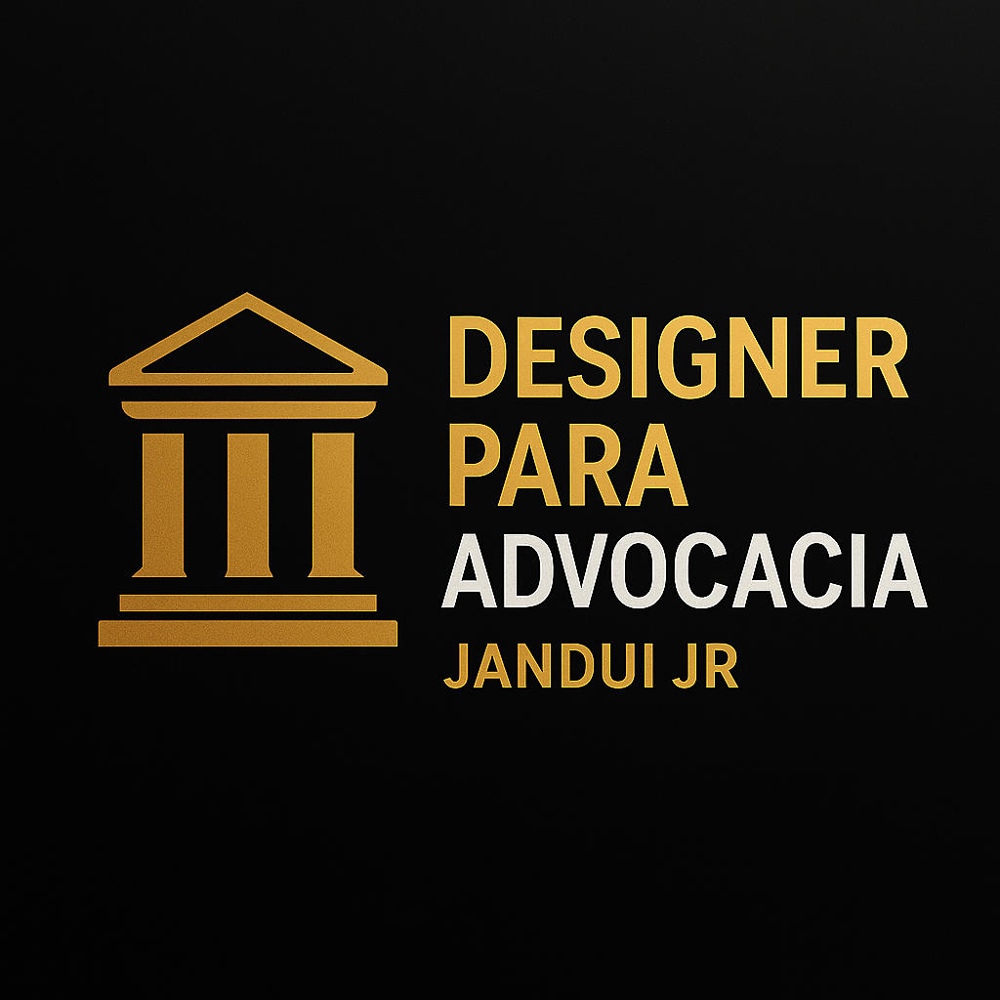

Design para Escritórios de Advocacia
Este projeto teve como foco o desenvolvimento de uma identidade visual exclusiva para escritórios de advocacia. A proposta foi criar um visual que transmitisse confiança, elegância e autoridade, utilizando tons sóbrios como dourado e preto — cores associadas à tradição e seriedade do Direito.

O design foi desenvolvido no Adobe Illustrator, com foco em uma composição equilibrada entre tipografia moderna e elementos simbólicos da Justiça. O objetivo foi criar uma marca de impacto visual, fácil de aplicar em papel timbrado, redes sociais e materiais de apresentação. O resultado final é um logotipo que reflete profissionalismo e credibilidade.
← Voltar aos projetos